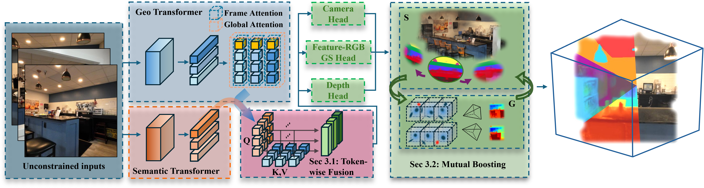
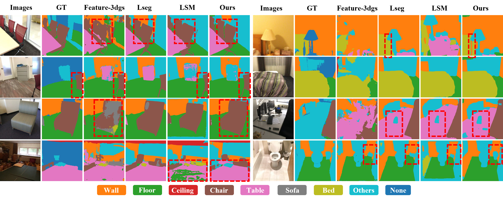
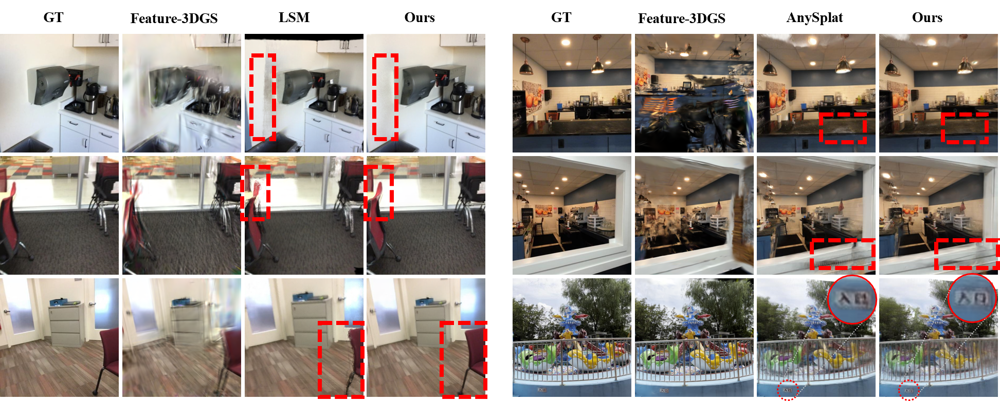

From unconstrained multi-view inputs, FF3R injects semantic-awareness into geometry tokens through Token-Wise Fusion, then decodes pixel-aligned features to predict feature-RGB GS, depth, and camera parameters. A Semantic–Geometry Mutual Boosting module, including Geometry-Guided Feature Warping, and Semantic-aware Voxelization, enables fully annotation-free training and yields high-quality novel view synthesis and open-vocabulary, 3D-consistent semantics.

Language-based 3D Segmentation Comparison:

Novel View Synthesis Comparison:

@inproceedings{zhou2026ff3r,
title={FF3R: Feedforward Feature 3D Reconstruction from Unconstrained views},
author={Chaoyi Zhou and Run Wang and Feng Luo and Mert D. Pesé and Zhiwen Fan and Yiqi Zhong and Siyu Huang},
booktitle ={CVPR Findings},
year={2026},
}